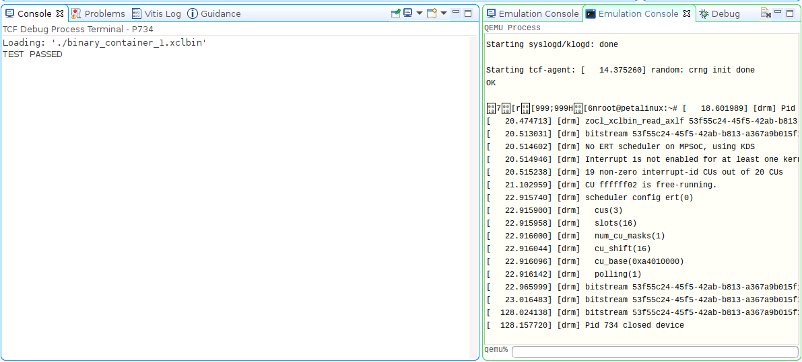

Versal カスタム プラットフォーム作成チュートリアル |
手順 4: プラットフォームのテスト¶
テスト 1: プラットフォーム情報の読み込み¶
Vitis 環境設定では、platforminfo ツールで XPFM プラットフォーム情報をレポートできます。
ハードウェア コンフィギュレーション (クロック、メモリ) およびソフトウェア コンフィギュレーション (ドメイン) が正しく設定されていることを確認できます。
ログを表示
# Find the XPFM file cd pfm find . -name "*.xpfm" cd<xpfm directory># Report Platform Info platforminfo vck190_custom.xpfm ========================== Basic Platform Information ========================== Platform: vck190_custom File: .../03_Edge_VCK190/ref_files/step3_pfm/platform_repo/vck190_custom/export/vck190_custom/vck190_custom.xpfm Description: A custom platform VCK190 platform ===================================== Hardware Platform (Shell) Information ===================================== Vendor: xilinx Board: name Name: name Version: 0.0 Generated Version: 2021.2 Hardware: 1 Software Emulation: 1 Hardware Emulation: 1 Hardware Emulation Platform: 0 FPGA Family: versal FPGA Device: xcvc1902 Board Vendor: xilinx.com Board Name: xilinx.com:vck190:2.2 Board Part: xcvc1902-vsva2197-2MP-e-S ================= Clock Information ================= Default Clock Index: 0 Clock Index: 0 Frequency: 200.000000 Clock Index: 1 Frequency: 100.000000 Clock Index: 2 Frequency: 300.000000 ================== Memory Information ================== Bus SP Tag: DDR ============================= Software Platform Information ============================= Number of Runtimes: 1 Default System Configuration: vck190_custom System Configurations: System Config Name: vck190_custom System Config Description: vck190_custom System Config Default Processor Group: xrt System Config Default Boot Image: standard System Config Is QEMU Supported: 1 System Config Processor Groups: Processor Group Name: aiengine Processor Group CPU Type: ai_engine Processor Group OS Name: aie_runtime Processor Group Name: xrt Processor Group CPU Type: cortex-a72 Processor Group OS Name: linux System Config Boot Images: Boot Image Name: standard Boot Image Type: Boot Image BIF: vck190_custom/boot/linux.bif Boot Image Data: vck190_custom/xrt/image Boot Image Boot Mode: sd Boot Image RootFileSystem: Boot Image Mount Path: /mnt Boot Image Read Me: vck190_custom/boot/generic.readme Boot Image QEMU Args: vck190_custom/qemu/pmc_args.txt:vck190_custom/qemu/qemu_args.txt Boot Image QEMU Boot: Boot Image QEMU Dev Tree: Supported Runtimes: Runtime: OpenCLテスト 2: PL アクセラ アプリケーションの実行¶
プラットフォームの機能を検証するために、PL カーネルを使用したアクセラレーション プロジェクトを作成します。このテストには、Vitis にビルトインされているベクター加算のテンプレートを使用します。
Vitis を起動します。
mkdir -p ref_files/step4_verify cd ref_files/step4_verify vitis -workspace ./ &
起動したら [Welcome] タブを閉じます。
カスタム プラットフォームを追加します。
[Xilinx] → [Add custom platform] をクリックします。
[Add] ボタンをクリックします。
手順 3 で生成したプラットフォーム ディレクトリを選択します(例:
<full_path>/platform_repo)。[OK] をクリックします。
カスタム プラットフォームでベクター加算アプリケーションを作成します。
[File] → [New] → [Application Project] をクリックします。
[Welcome] ページで [Next] をクリックします。
[Platform] ページで、リストから [vck190_custom] プラットフォームを選択します。[Next] をクリックします。
[Application project name] を vadd に、ターゲット プロセッサを psv_cortexa72_SMP に設定します。[Next] をクリックします。

Sysroot パス (step3_pfm/sw_comp/sysroots/cortexa72-cortexa53-xilinx-linux) を入力します。
RootFS パス (step3_pfm/sw_comp/rootfs.ext4) を入力します。
Kernel Image パス (step3_pfm/sw_comp/Image).を入力します。これらのコンポーネントは、手順 3 で準備したものです。[Next] をクリックします。
[Vector Addition] テンプレートを選択します。[Finish] をクリックします。
(オプション) ハードウェア エミュレーション用のベクター加算アプリケーションをビルドします。
vadd_system プロジェクトを選択します。
ツールバーの [Build] (ハンマー アイコン) のドロップダウンをクリックし、[Emulation-HW] を選択します。この手順は、[Active Build Configuration] に [Emulation-HW] を選択し、[Build] アイコンをクリックしても実行できます。
プロジェクトをクリーンアップするかどうか尋ねるダイアログ ボックスが表示されたら、[Don't clean] を選択します。
ハードウェア用のベクター加算アプリケーションをビルドします。
vadd_system プロジェクトを選択します。
ツールバーの [Build] (ハンマー アイコン) のドロップダウンをクリックし、[Hardware] を選択します。この手順は、[Active Build Configuration] に [Hardware] を選択し、[Build] アイコンをクリックしても実行できます。
ハードウェアのビルドには時間がかかります。最後に Vitis は、vadd_system/Hardware/package ディレクトリに sd_card.img を生成します。
(オプション) ハードウェア エミュレーションでのアプリケーションのテスト¶
PS 用のエミュレーターを起動します。
[Xilinx] → [Start/Stop Emulator] をクリックします。
[Project] は vadd_system、[Configuration] は Emulation-HW にします。

[Start] をクリックします。
[Emulation Console] に表示さあれます。
Linux が起動するまで待ちます。Linux の起動が正しく検出されると、待機ウィンドウは表示されなくなります。
PL エミュレーションを起動します。
[add_system] を右クリックして [Run as] → [Run Configurations] をクリックします。
vadd_system -Default を選択します
[Build Configuration] を [Emulation-HW] に変更します。
[Run] をクリックします。
実行結果を確認します。

エミュレーターを停止します。
[Xilinx] → [Start/Stop Emulator] をクリックします。
[Stop] ボタンをクリックします。
ハードウェアでのアプリケーションのテスト¶
リモート サーバーまたは仮想マシン上でプロジェクトをビルドする場合は、ローカルに
vadd_system/Hardware/package/sd_card.imgをコピーします。sd_card.img を SD カードにプログラムします。詳細な手順は、アンサー #73711 を参照してください。
注記: プログラムされた SD カードには 2 つのパーティションがあります。ブート コンポーネントを含む FAT32 パーティションと Linux ルート ファイル システムを持つ EXT4 パーティションです。Windows システムは、デフォルトでは EXT4 パーティションの内容を見ることができません。
注記: SD カードをプログラミングした後、システムから正しく取り出してください。
SD カードを挿入し、SD ブートモード (SW1[4:1] = “1110”: OFF, OFF, OFF, ON) の後電源投入して VCK190 ボードをブートします。
注記: ブート モードの詳細は、『VCK190 評価ボード ユーザー ガイド』を参照してください。
UART コンソールへ接続します。
UART コンソールからテスト アプリケーションを起動します。
cd /mnt/sd-mmcblk0p1 ./vadd binary_container_1.xclbin
注記: デバイス ツリーのバージョンによっては、SD カードのマウント ポイントは /mnt/sd-mmcblk1p1 になります。システムで /mnt/sd-mmcblk0p1 を使用できない場合は、このパスを試してください。
UART コンソールに次のように表示されます。
ログを表示
root@petalinux:/mnt/sd-mmcblk0p1# ./vadd binary_container_1.xclbin [ 34.747622] [drm] Pid 770 opened device [ 34.751501] [drm] Pid 770 closed device [ 34.759710] [drm] Pid 770 opened device [ 34.763568] [drm] Pid 770 closed device [ 34.767554] [drm] Pid 770 opened device Loading: 'binary_container_1.xclbin' [ 35.023095] [drm] get section AIE_METADATA err: -22 [ 35.023119] [drm] zocl_xclbin_read_axlf 1ec78909-b5e7-4db2-9fe9-22fd362b09a4 ret: 0 [ 35.029555] [drm] bitstream 1ec78909-b5e7-4db2-9fe9-22fd362b09a4 locked, ref=1 [ 35.037397] [drm] No ERT scheduler on MPSoC, using KDS [ 35.049806] [drm] 9 non-zero interrupt-id CUs out of 10 CUs [ 35.049852] [drm] scheduler config ert(0) [ 35.055426] [drm] cus(1) [ 35.059435] [drm] slots(16) [ 35.062132] [drm] num_cu_masks(1) [ 35.065095] [drm] cu_shift(16) [ 35.068578] [drm] cu_base(0xa4010000) [ 35.071799] [drm] polling(0) [ 35.075658] [drm] bitstream 1ec78909-b5e7-4db2-9fe9-22fd362b09a4 unlocked, ref=0 TEST PASSED [ 35.079775] [drm] bitstream 1ec78909-b5e7-4db2-9fe9-22fd362b09a4 locked, ref=1 [ 35.099312] [drm] bitstream 1ec78909-b5e7-4db2-9fe9-22fd362b09a4 unlocked, ref=0 [ 35.116279] [drm] Pid 770 closed device注記: [ 35.116279] [drm] メッセージは、XRT からデバッグ目的に表示されます。表示されるのは UART の場合のみです。これは ssh の場合も表示されるようになりました。このデバッグ メッセージは、system dmesg のレポート レベルを下げるとオフにできます。
echo "4" > /proc/sys/kernel/printkここまでの結果
Vitis は、XSIM の QEMU、PL、AIE エミュレーションで PS エミュレーションを実行します。これらは相互に通信できます。エミュレーションを実行すると、Vitis は実行ファイルと xclbin を [Remote Working Directory] で指定したディレクトリにダウンロードして、起動します。
テスト 3: AIE ＋ PL アクセラレーション アプリケーション プロジェクトの実行¶
プラットフォームの機能を検証するために、AIE + PL カーネルと PS アプリケーションを含むプロジェクトを作成し、VCK190 ボード上で実行します。
カスタム プラットフォームでベクター加算アプリケーションを作成します。
[File] → [New] → [Application Project] をクリックします。
[Welcome] ページで [Next] をクリックします。
[Platform] ページで、リストから [vck190_custom] プラットフォームを選択します。[Next] をクリックします。
アプリケーション名を plaie に、ターゲット プロセッサを psv_cortexa72_SMP に設定します。[Next] をクリックします。
sysroot パス、rootfs パス、およびカーネル イメージを入力します。[Next] をクリックします。
[AI Engine System Design Examples] → [AI Engine, PL and PS System Design] テンプレートを選択します。[Finish] をクリックします。
ハードウェア用のベクター加算アプリケーションをビルドします。
plaie_system プロジェクトを選択します。
ツールバーの [Build] (ハンマー アイコン) のドロップダウンをクリックし、[Hardware] を選択します。この手順は、[Active Build Configuration] に [Hardware] を選択し、[Build] アイコンをクリックしても実行できます。
(オプション) ハードウェア エミュレーション用のベクター加算アプリケーションをビルドします。
plaie_system プロジェクトを選択します。
ツールバーの [Build] (ハンマー アイコン) のドロップダウンをクリックし、[Emulation-HW] を選択します。この手順は、[Active Build Configuration] に [Emulation-HW] を選択し、[Build] アイコンをクリックしても実行できます。
プロジェクトをクリーンアップするかどうか尋ねるダイアログ ボックスが表示されたら、[Don't clean] を選択します。
ビルドが正常に完了すると、sd_card.img が
plaie_system/Hardware/packageおよびplaie_system/Hardware/package_no_aie_debugディレクトリに生成されます。これには、1 つ目の FAT32 パーティションの sd_card ディレクトリにあるすべてのファイルと、2 つ目の EXT4 パーティションの rootfs.ext4 の内容が含まれます。相違点は、package ディレクトリの sd_card.img にはenable_aie_debug=1パッケージ パラメーターがあることです。これはデバッグに使用されます。package_no_aie_debug のものはフリーランニングに使用できます。
ハードウェアでのアプリケーションのテスト¶
プロジェクトがサーバーまたは仮想マシンで実行される場合は
plaie_system/Hardware/package_no_aie_debugディレクトリから sd_card.img をローカルにコピーします。注記: Vitis は aie_debug をイネーブルにしたイメージとディスエーブルにしたイメージを生成します。aie_debug がディスエーブルになったイメージは自由に実行されます。aie_debug がイネーブルになったイメージは、AI エンジンを停止し、デバッガーが接続するのを待ちます。
sd_card.img を SD カードにプログラムします。詳細な手順は、アンサー #73711 を参照してください。
注記: プログラムされた SD カードには 2 つのパーティションがあります。ブート コンポーネントを含む FAT32 パーティションと Linux ルート ファイル システムを持つ EXT4 パーティションです。Windows システムは、デフォルトでは EXT4 パーティションの内容を見ることができません。
注記: SD カードをプログラミングした後、システムから正しく取り出してください。
SD カードを挿入し、SD ブートモード (SW1[4:1] = “1110”: OFF, OFF, OFF, ON) の後電源投入して VCK190 ボードをブートします。
注記: ブート モードの詳細は、『VCK190 評価ボード ユーザー ガイド』を参照してください。
XRT ランタイム環境を設定し、UART コンソールからテスト アプリケーションを開始します。
cd /mnt/sd-mmcblk0p1 ./plaie binary_container_1.xclbin
UART コンソールに次のように表示されます。
ログを表示
root@petalinux:/mnt/sd-mmcblk0p1# ./plaie binary_container_1.xclbin [ 381.642589] [drm] Pid 693 opened device [ 381.646455] [drm] Pid 693 closed device [ 381.654748] [drm] Pid 693 opened device [ 381.658589] [drm] Pid 693 closed device [ 381.662601] [drm] Pid 693 opened device Loading: 'binary_container_1.xclbin' [ 381.928588] [drm] zocl_xclbin_read_axlf 8ff25a1d-3722-4718-bae4-e65ef3313a0f ret: 0 [ 381.934195] [drm] bitstream 8ff25a1d-3722-4718-bae4-e65ef3313a0f locked, ref=1 [ 381.941892] [drm] No ERT scheduler on MPSoC, using KDS [ 381.954244] [drm] Interrupt is not enabled for at least one kernel. Fall back to polling mode. [ 381.954419] [drm] 12 non-zero interrupt-id CUs out of 13 CUs [ 381.963051] [drm] CU ffffff02 is free-running. [ 381.968711] [drm] scheduler config ert(0) [ 381.973149] [drm] cus(3) [ 381.977152] [drm] slots(16) [ 381.979853] [drm] num_cu_masks(1) [ 381.982813] [drm] cu_shift(16) [ 381.986292] [drm] cu_base(0xa4010000) [ 381.989515] [drm] polling(1) [ 381.993375] [drm] bitstream 8ff25a1d-3722-4718-bae4-e65ef3313a0f unlocked, ref=0 TEST PASSED [ 381.998058] [drm] bitstream 8ff25a1d-3722-4718-bae4-e65ef3313a0f locked, ref=1 [ 382.022624] [drm] bitstream 8ff25a1d-3722-4718-bae4-e65ef3313a0f unlocked, ref=0 [ 382.045158] [drm] Pid 693 closed device(オプション) ハードウェア エミュレーションでのアプリケーションのテスト¶
PS 用のエミュレーターを起動します。
[Xilinx] → [Start/Stop Emulator] をクリックします。
[Project] は plaie_system、[Configuration] は Emulation-HW にします。
[Start] をクリックします。
[Emulation Console] に表示さあれます。
Linux が起動するまで待ちます。Linux の起動が正しく検出されると、待機ウィンドウは表示されなくなります。
PL および AIE エミュレーションを起動します。
[plaie_system] を右クリックして [Run as] → [Run Configurations] をクリックします。
plaie_system-Launch を選択します。
[Run] をクリックします。

エミュレーターを停止します。
[Xilinx] → [Start/Stop Emulator] をクリックします。
[Stop] ボタンをクリックします。
注記: ファスト トラック スクリプトを使用すると、スクリプトを簡素化するために、別の AI エンジン テスト アプリケーションが実行されますが、パスするはずです。
これで、PL アクセラレーションカーネルと AIE アプリケーションが動作するカスタム プラットフォームが作成できました。
次の章では、よく発生する問題とよくある質問について説明します。プラットフォーム作成の詳細は、そちらをご覧ください。
Copyright© 2021 Xilinx